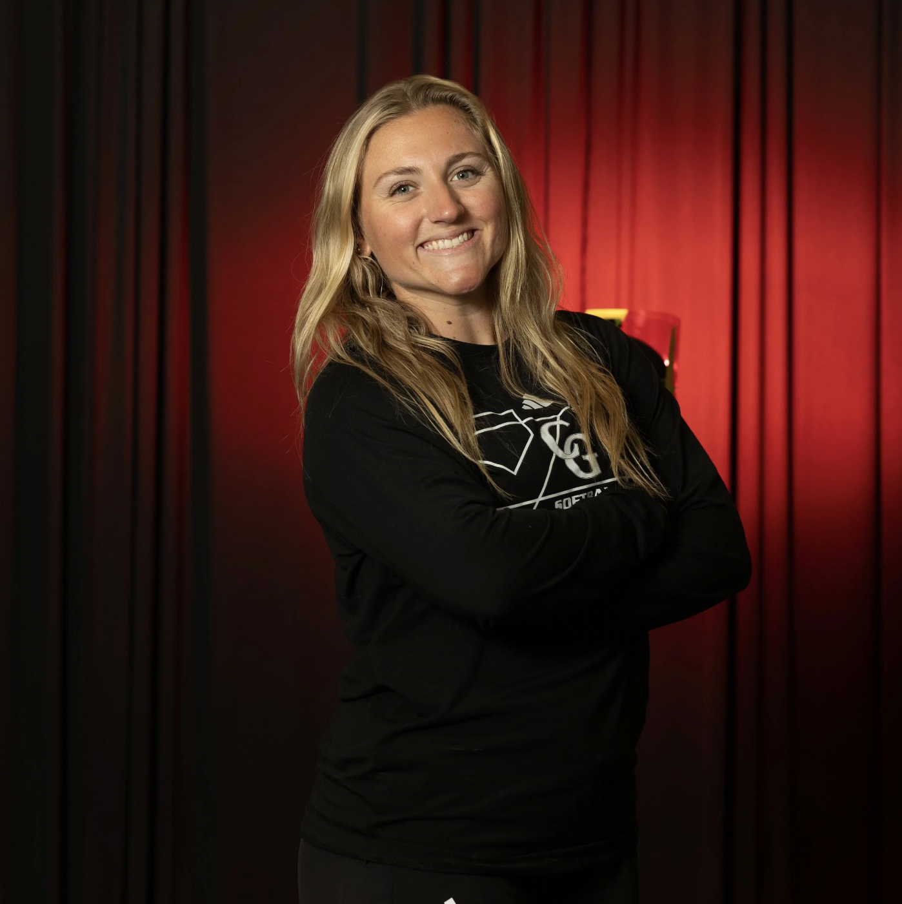
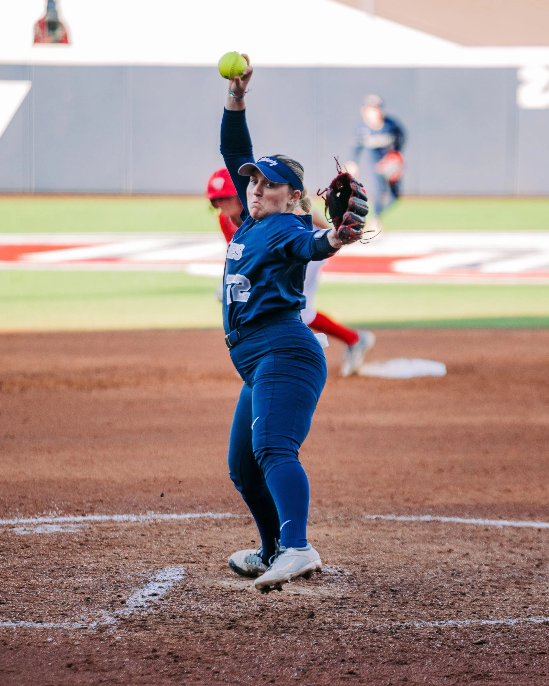
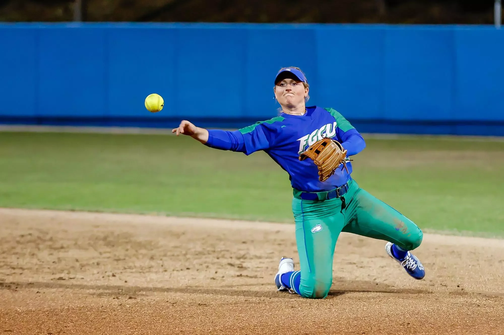
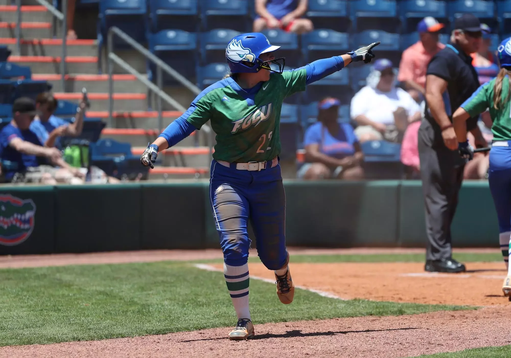

Meet Coach Emily
South Florida native. Five-year NCAA Division I athlete. High school head coach. And the reason this camp exists.

From these fields, back to these fields
Emily Estroff grew up playing softball right here in South Florida. She went on to complete five years of NCAA Division I softball, earning her bachelor's degree from Florida Gulf Coast University and her master's from Liberty University, and today serves as head softball coach at Cardinal Gibbons High School.
Along the way she noticed something that didn't sit right: young players in South Florida had the talent, but too often had to travel far from home just to be seen by college coaches.
So she built the stage herself. South Florida Select Softball brings high-level instruction, meaningful exposure, and connections with top college coaches to the players' own backyard — helping athletes believe in their potential and confidently chase their dreams.
-
Grew up in South FloridaA hometown player who knows these fields firsthand
-
5 years of NCAA Division I softballPlayed collegiately while earning her B.S. at Florida Gulf Coast University
-
Master's degree, Liberty UniversityContinued as a graduate student-athlete
-
Head Coach, Cardinal Gibbons High SchoolDeveloping the next generation of South Florida players
-
Founded South Florida Select Softball · 2026An exposure camp built to bridge the gap for local athletes



Emily's mission
— Coach Emily Estroff“This exposure camp was created to bridge that gap — a platform where players can be seen, challenged, and guided.”